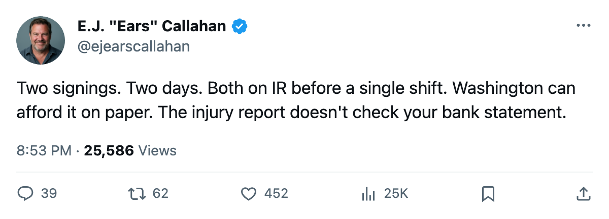
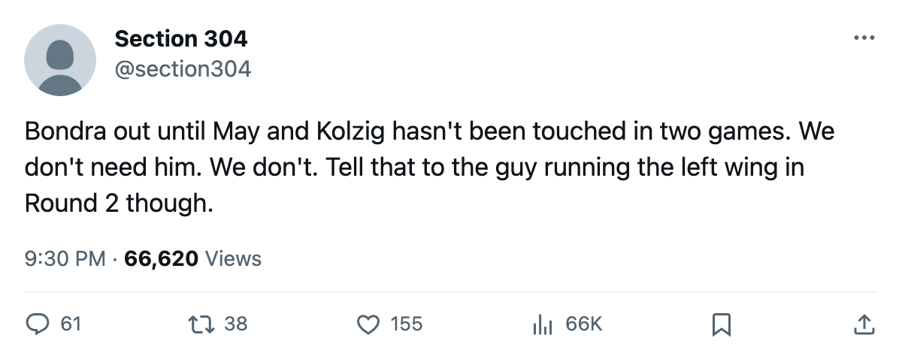

RUMOR METER: Washington Signs 2 in 2 Days. Both Go to IR Before a Shift. The Pattern Finds the Contenders. 🔥🔥
WSH, DAL and NSH all caught bodies on new signings in the same week. The injury rate has not broken. It just moved address.
 E.J. "Ears" CallahanInsider · The Hot Stove
E.J. "Ears" CallahanInsider · The Hot Stove

Signing-injury pattern: 4 for 7 this batch, 19 from 30 overall. Contenders hit for the first time.

The signing-injury pattern the desk called on March 7 found its first contending victims this week.  Washington Capitals filed two contracts in two days, and both new men landed on the injured reserve before taking a shift.
Washington Capitals filed two contracts in two days, and both new men landed on the injured reserve before taking a shift.
On 2005-04-07, Washington signed  Sylvain Cote75 for $370,720. Two days later,
Sylvain Cote75 for $370,720. Two days later,  Peter Bondra88 came in for $614,710. The league's injury report now lists Cote with a groin, return date 2005-04-19, and Bondra with a knee, return date 2005-05-29. Both onset windows open 2005-04-09, after the signings were filed.
Peter Bondra88 came in for $614,710. The league's injury report now lists Cote with a groin, return date 2005-04-19, and Bondra with a knee, return date 2005-05-29. Both onset windows open 2005-04-09, after the signings were filed.
Washington sits 2-0 up on  Carolina Hurricanes in the East first round.
Carolina Hurricanes in the East first round.  Olaf Kolzig89 has a 1.00 GAA and a .952 save percentage through two games. The club looked fine without its new depth. It still does. But a knee to 2005-05-29 removes a man at 87 overall who could have changed a second-round series.
Olaf Kolzig89 has a 1.00 GAA and a .952 save percentage through two games. The club looked fine without its new depth. It still does. But a knee to 2005-05-29 removes a man at 87 overall who could have changed a second-round series.
The Pattern Keeps Feeding, Now at Contenders
Through March 25, the desk tracked 12 injuries from 15 deals. The next batch went 3 for 8. This batch, 7 signings filed since the previous edition, is 4 for 7. The running total sits at 19 injuries from 30 deals and keeps sliding but has not broken.
What changed is the address.  Los Angeles Kings,
Los Angeles Kings,  Columbus Blue Jackets and rebuilding outfits caught bodies in the first batches. This time it is Washington losing both new acquisitions,
Columbus Blue Jackets and rebuilding outfits caught bodies in the first batches. This time it is Washington losing both new acquisitions,  Dallas Stars signing Pierre Turgeon for $446,420 and putting him on IR with a shoulder until 2005-05-12, and
Dallas Stars signing Pierre Turgeon for $446,420 and putting him on IR with a shoulder until 2005-05-12, and  Nashville Predators signing
Nashville Predators signing  Andreas Johansson78 for $514,390 and putting him on IR with a shoulder until 2005-04-15. All three clubs are alive in the playoffs.
Andreas Johansson78 for $514,390 and putting him on IR with a shoulder until 2005-04-15. All three clubs are alive in the playoffs.
Dallas leads Detroit 2-0.  Marty Turco97 has a 1.31 GAA through two games. A sweep would paper over Turgeon's absence, 77 overall gone for a shoulder that won't open for a month. But Round 2 starts soon, and a second-line center at 77 is what a coach needs when the calendar gets compressed.
Marty Turco97 has a 1.31 GAA through two games. A sweep would paper over Turgeon's absence, 77 overall gone for a shoulder that won't open for a month. But Round 2 starts soon, and a second-line center at 77 is what a coach needs when the calendar gets compressed.
Nashville's case is the mildest. Johansson, 76 overall, is back 2005-04-15. His club is 1-1 with  Mighty Ducks of Anaheim and could use him by Game 3. Washington's is the worst: two signings, two IR entries, zero shifts logged together.
Mighty Ducks of Anaheim and could use him by Game 3. Washington's is the worst: two signings, two IR entries, zero shifts logged together.
Two Clubs That Could Afford It
Washington carries $55.92M in payroll, $20.44M in profit and a club morale average of 96.8, the second highest in the league. On paper, this is a franchise that doesn't flinch when a depth signing goes down. Cote is back before Game 3 of the CAR series. Bondra is not back before 2005-05-29, which is a date that could land mid-series in Round 2 at best, or not at all.
 St. Louis Blues holds 8 picks and 2 first-rounders. Washington Capitals holds 7 picks. Neither club moved at the deadline. Both just learned that the back end of the season has its own cost structure, and it doesn't run through the draft lottery.
St. Louis Blues holds 8 picks and 2 first-rounders. Washington Capitals holds 7 picks. Neither club moved at the deadline. Both just learned that the back end of the season has its own cost structure, and it doesn't run through the draft lottery.
The desk scores this batch at 4 for 7. The math is what it is: late signings go down, and the clubs still playing in April have the least room to absorb the hit. Washington had room and burned it in 2 days.

